Handle customer returns, cancellations and credit notes for any line of a Sale Order from a single popup. The wizard creates the return receipt, the credit note and the order changes in one step, and only credits what was actually invoiced.
Handling a customer return in standard Odoo works, but it takes three apps and many manual steps, and it is easy to get wrong when an order has many lines, several deliveries or partial invoices.
All screenshots are from a live Odoo database with demo data: order S00029, 10 lines, partly delivered and invoiced.
Shown on confirmed orders to users in the Returns & Credit Notes group (Sales Managers get it automatically). Quotations, cancelled and locked orders do not show it. A Returns smart button appears once the order has a return log.
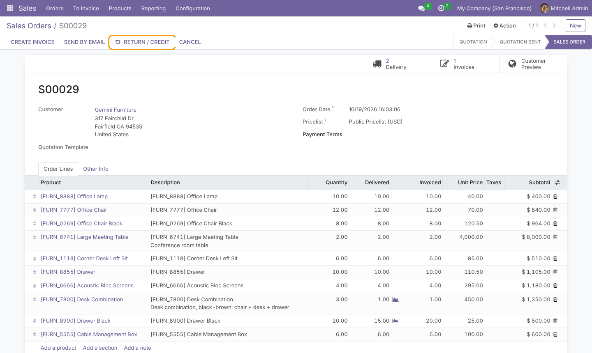
Each line shows Ordered, Delivered, Invoiced, Returnable and Undelivered quantities, combined across all deliveries and invoices of the order. The header shows how many lines are shown and selected, and the estimated credit, updated as you edit.
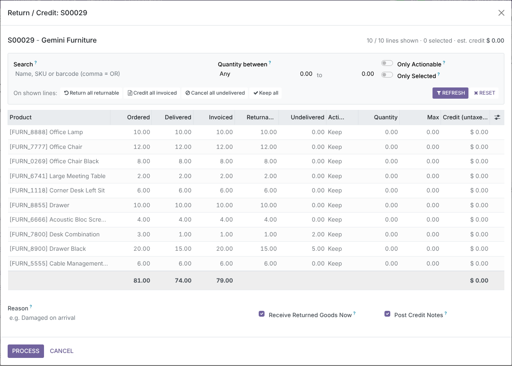
Filter by product name, SKU, barcode or line description (comma-separated terms match any of them), by a quantity range on Ordered, Delivered, Invoiced, Returnable or Undelivered, or show only actionable or selected lines. The list filters as soon as a filter changes, and edits on hidden lines are kept.
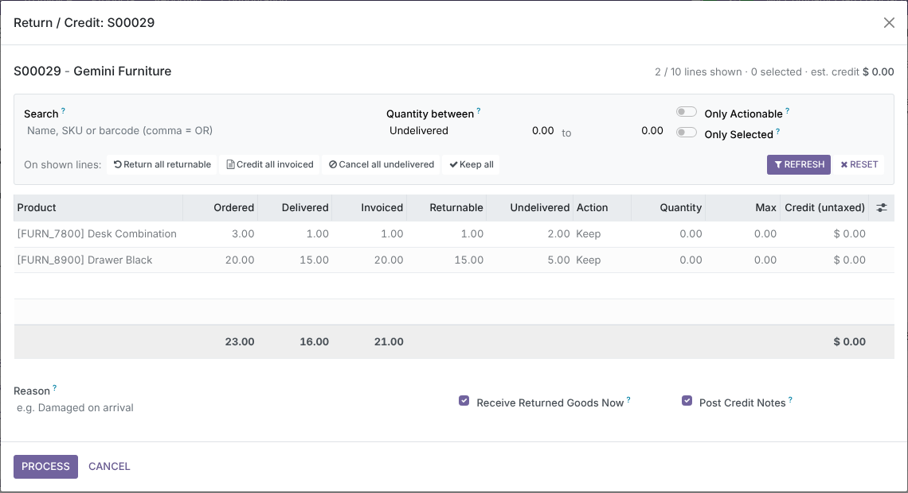
Return all returnable, Credit all invoiced, Cancel all undelivered and Keep all apply the maximum allowed quantity to every line currently shown, and skip lines where the action has nothing available. Here the two backordered lines are set to Cancel Undelivered in one click.
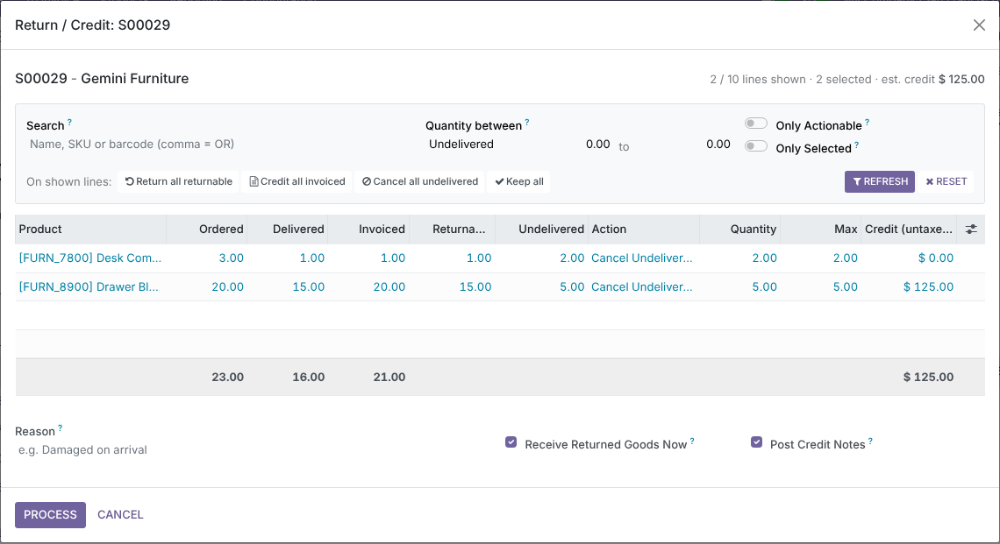
Pick an action and the quantity fills in with the maximum allowed; lower it if needed. Max shows the limit for that action and Credit previews the untaxed amount, at the line's price and discount.
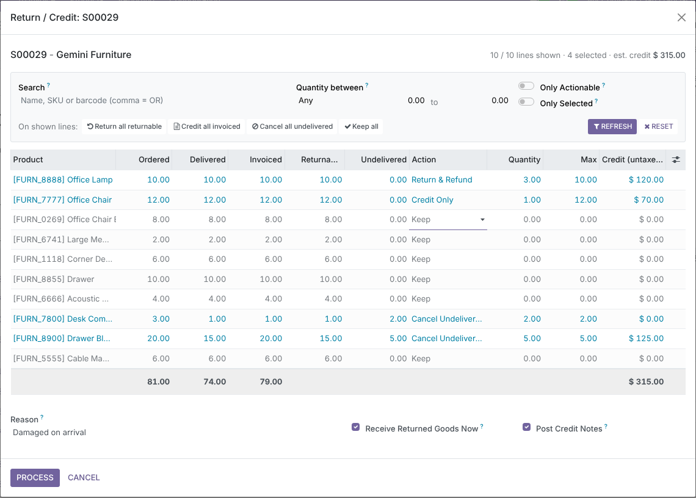
A quantity above the limit is capped while you type, with a message that explains why. Server-side constraints block negative values, quantities on Keep lines and anything above ordered, delivered, still-returnable or still-creditable. On Process, every line is re-read from the live order, so a return made meanwhile by a colleague is never duplicated.
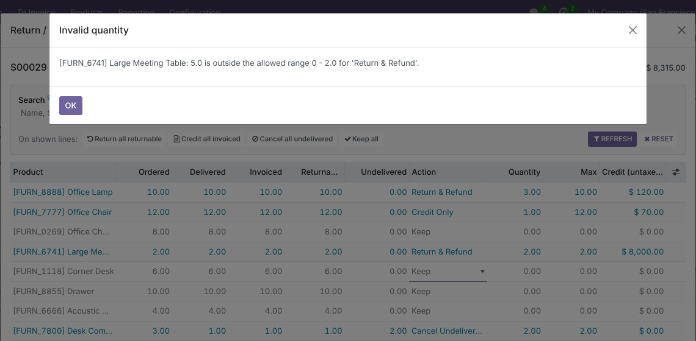
Switch on Only Selected to see exactly what will be processed and its total credit. Add a reason, choose whether to receive the goods now and whether to post the credit note, then click Process. Cancel closes the popup and nothing is created.
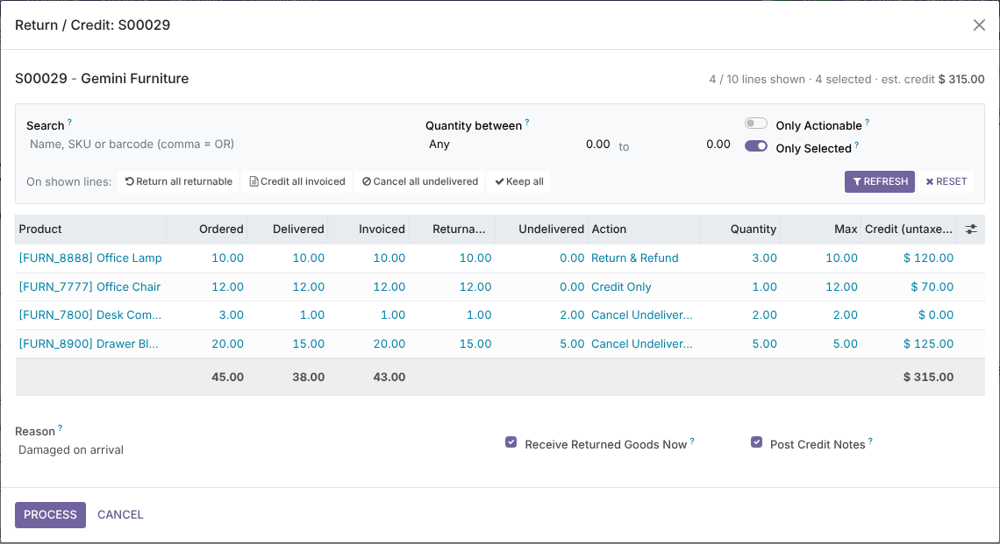
One click here produced a posted Customer Credit Note for $315.00 (3 returned lamps, a 1-chair allowance and 5 over-invoiced drawers), with the reason as its reference and a link to the original invoice. The return receipt was created with Odoo's standard return mechanism against the original delivery, so valuation and traceability follow core rules, and it was validated straight away. The undelivered backorder was cancelled and the order quantities updated.
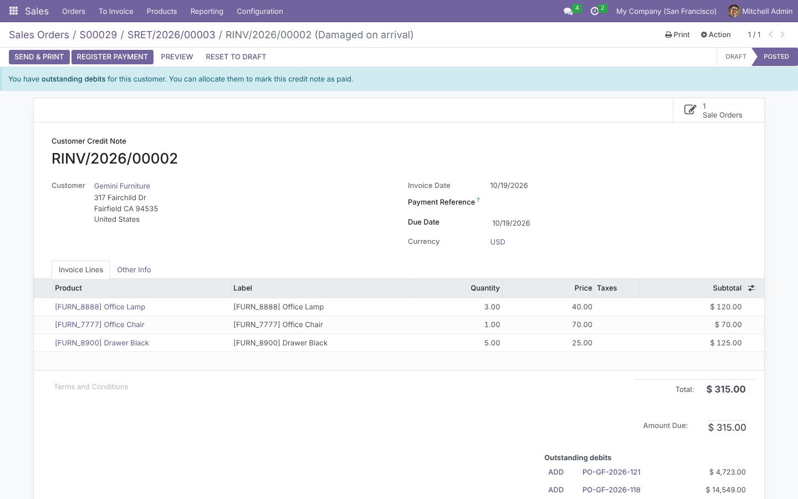
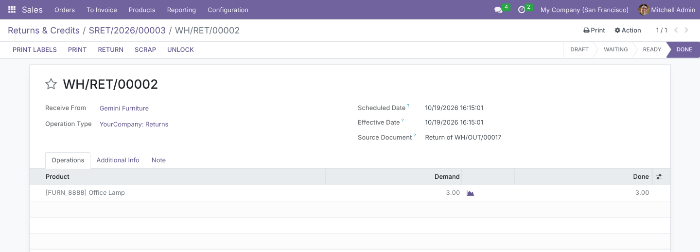
Every run writes an SRET/YYYY/NNNNN record that cannot be created or edited by hand. It holds the user and date, the reason, the amount credited and, per line, the quantity asked, credited, received back and removed from the order, with smart buttons to the return receipts and credit notes. Status stays Waiting Goods until the warehouse validates the returns. Find it under Sales › Orders › Returns & Credits, filtered by Waiting Goods or My Returns and grouped by customer or date.
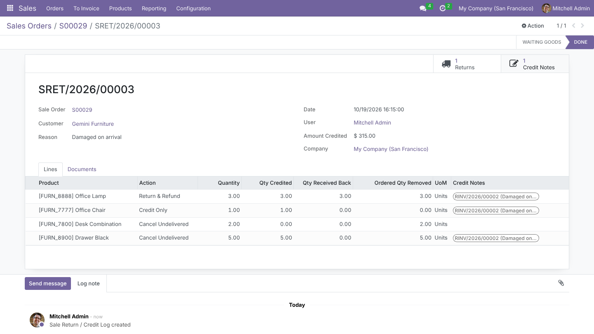
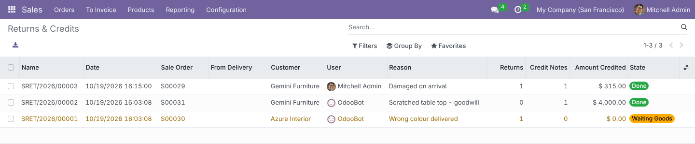
The Sale Order receives a message linking to the log, with one line per action, next to Odoo's own tracking of the changed quantities and totals.
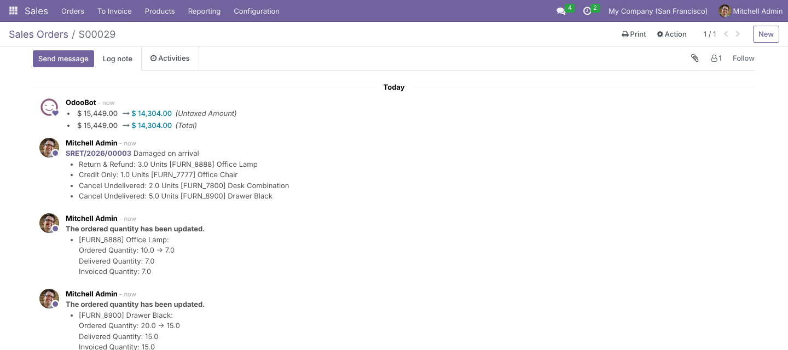
The same button sits next to Odoo's Return on every customer delivery of a confirmed order. From a delivery, the wizard lists only that delivery's products and caps every limit to what this transfer shipped or still has open. Cancelling from a backorder cuts that backorder's own moves, never another delivery. A Return Logs smart button and chatter messages appear on the delivery.
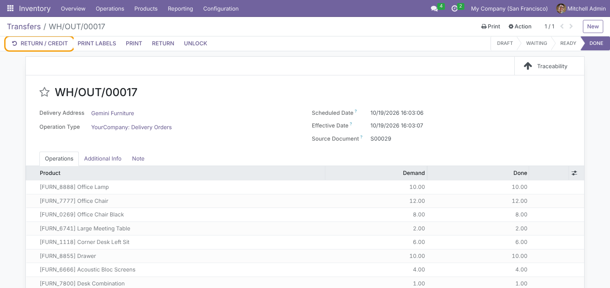
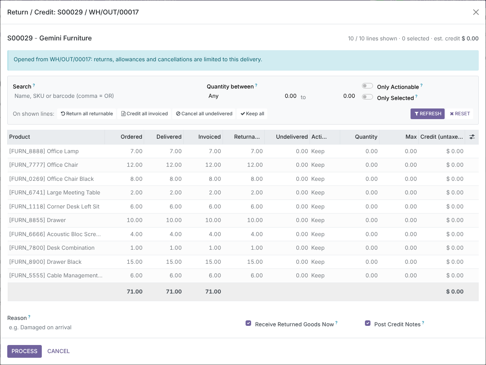
Each line is routed by what was delivered and invoiced for it. You never choose the documents by hand.
| Situation of the line | Created on Process | Order line afterwards |
|---|---|---|
| Delivered & invoiced, return 3 of 10 | Validated return receipt + posted credit note for 3 | 7 ordered, 7 delivered, 7 invoiced |
| Invoice still in draft, return 3 | Return receipt + draft credit note for 3 | Review and post with the invoice |
| Delivered, not invoiced, return 4 of 10 | Return receipt only | 6 ordered, 6 delivered, 6 left to invoice |
| Partially invoiced: delivered 10, invoiced 6, return 8 | Return receipt for 8; credit only for the 6 invoiced | 2 ordered, 2 delivered, 2 left to invoice |
| Cancel Undelivered | Pending delivery reduced or cancelled; credit note only for quantities invoiced in advance | Ordered = delivered |
| Credit Only | Credit note line not linked to the order line | Unchanged; nothing becomes invoiceable again |
| Odoo version | 19.0, Community and Enterprise |
| Depends on | sale_stock, account (no Enterprise-only modules) |
| Security group | Returns & Credit Notes (Sales Managers get it automatically); returns also need Inventory / User |
| Menu | Sales › Orders › Returns & Credits |
| Automated tests | 20 TransactionCase tests: constraints, routing, mixed partial/full returns, stale wizards, filters, delivery scope |
| Prerequisites | Customer invoices created from the Sale Order |
Questions, a demo, or changes for your own process? Get in touch.
✉ ibrahim.yahiah@gmail.com LinkedIn: Ibrahim YahiaAuthor: Ibrahim Yahia · License: LGPL-3